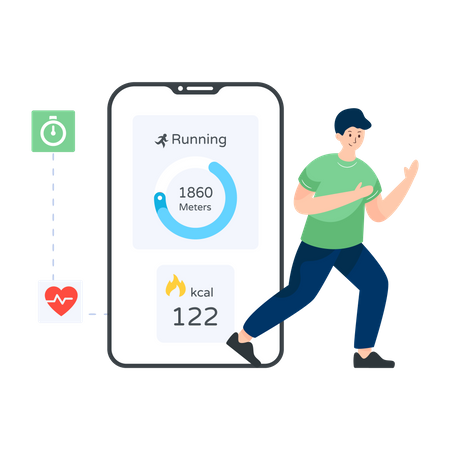

Step Tracker

Track the number of steps you walk daily. Our tool helps you set goals, monitor progress, and stay motivated with daily step challenges and achievements.
Workout Log

Log your strength and cardio workouts. Track reps, sets, duration, and calories burned. Analyze trends to improve your physical fitness and prevent injuries.
Calorie Burn Estimator

Estimate how many calories you burn through various exercises. Input your weight, time, and activity type to get accurate results and improve your diet plan.